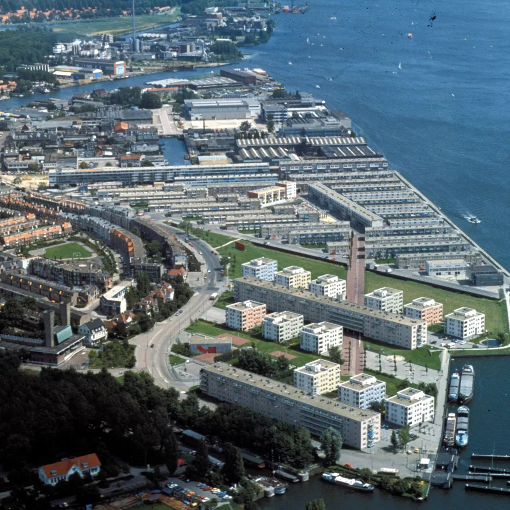

Over Stichting IJplein
Ons doel is het behoud van de cultuurhistorische waarden van het IJplein als beeldbepalend stadsgezicht aan de IJ-oever.

Voorzitter
Redmar Riemersma
Secretaris, Penningmeester
Yvette Taminiau
Contact:
email: stichting.ijplein@gmail.com
KVK-nummer: 76673758